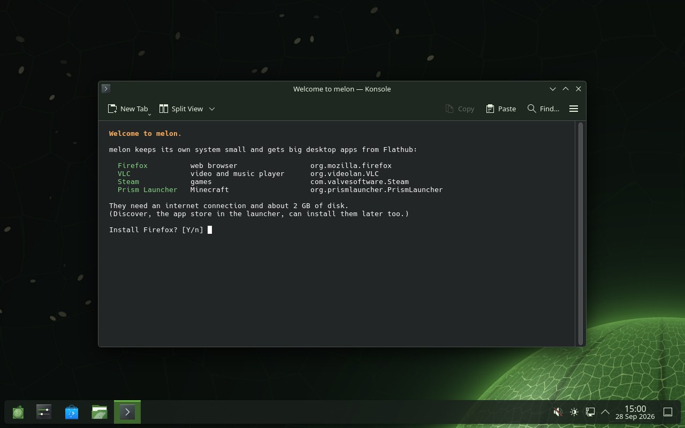
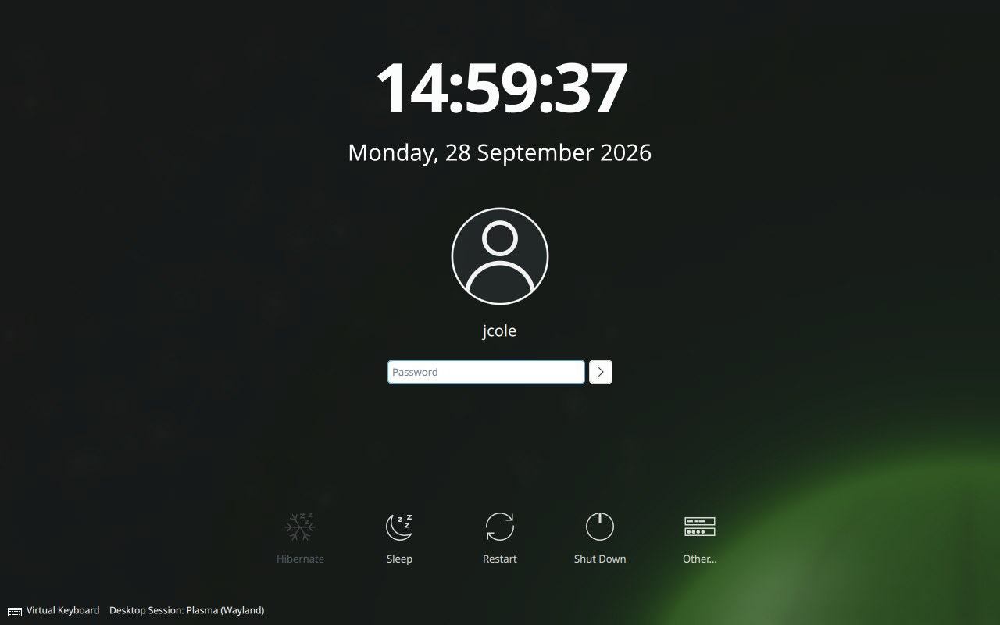
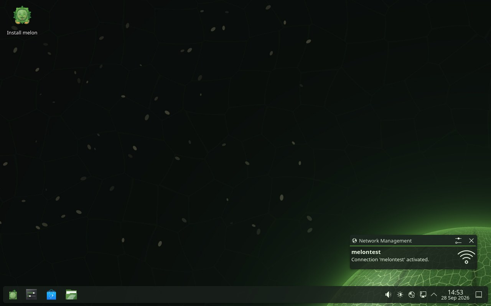

A small Linux distribution built from scratch: KDE Plasma on Wayland, on top of musl, runit and apk. Fast, quiet, and yours.
Download the ISO How to installEvery package is compiled from upstream source by melon's own build scripts, signed, and shipped as a small apk package. Nothing you don't need, everything you do.
musl libc, BusyBox and runit: a system that boots in seconds and stays out of your way.
A complete, modern desktop with its own melon look, set up the moment you log in.
Firefox, VLC, Steam and thousands more through Flatpak, offered on first login and in Discover.
Touchpads, Wi-Fi (Intel, Realtek, MediaTek, Qualcomm), Bluetooth, webcams, hotkeys, USB drives and printers.
One question in the installer gives you a LUKS2-encrypted system.
Install next to Windows: melon uses the free space and adds itself to your boot menu without touching Windows.
apk upgrade keeps everything current from melon's signed online repository.
Steam through Flatpak, gamepads, Vulkan and GameMode ready to go.
Straight from melon's automated tests, running in a virtual machine.



A distribution you can read end to end.
About ten minutes, most of it answering the gauntlet.
dd.melon's installer asks you questions before it lets you in: 200 of them, shuffled every time. Wrong answers send you back. Make it through and melon installs.
Want more? Take the final trial: 50 real questions against the clock, and the last 20 must be flawless. Survivors get melon in gold (the login screen, colours and boot menu), three survivor wallpapers and a certificate that says they earned it.
The desktop ISO is a live system and installer in one. Builds are test releases for now.
Get melon desktop (x86_64, about 1.2 GB)Check your download against SHA256SUMS on the release page.
64-bit x86 (Intel or AMD)
4 GB, 8 GB recommended
20 GB or more
UEFI or legacy BIOS
Hardware not working? Run sudo melon-hwreport in Konsole and
open an issue with the file it writes.